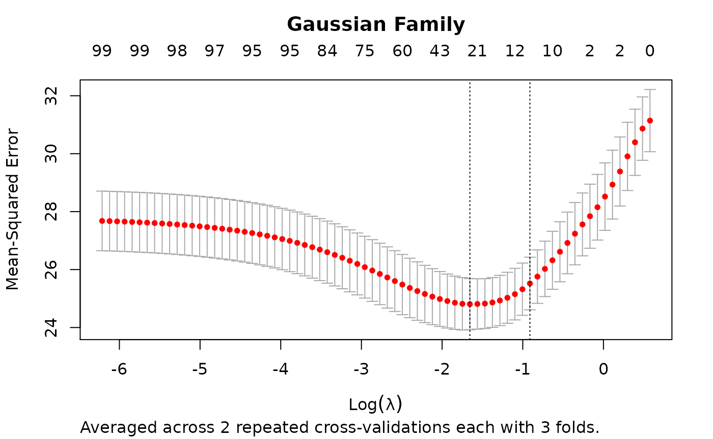

glmnettools.RmdThe glmnettools package offers functions for repeated cross-validation and prediction of survival probabilities using the glmnet package (Friedman, Hastie, and Tibshirani 2010; Simon et al. 2011).
The example is taken from the cv.glmnet manual page (?"glmnet::cv.glmnet"):
library("glmnettools")## Loading required package: glmnet## Loading required package: Matrix## Loaded glmnet 4.1-1
# Generating example data
set.seed(1010)
n <- 1000
p <- 100
nzc <- trunc(p/10)
x <- matrix(rnorm(n * p), n, p)
beta <- rnorm(nzc)
fx <- x[, seq(nzc)] %*% beta
eps <- rnorm(n) * 5
y <- drop(fx + eps)
set.seed(1011)
# nrepcv should usually be higher but to keep the runtime of the example low
# we choose 2 here
rcvob <- rcv.glmnet(x, y, nrepcv = 2)
plot(rcvob)
title("Gaussian Family", line = 2.5)
coef(rcvob)## 101 x 1 sparse Matrix of class "dgCMatrix"
## 1
## (Intercept) -0.1162737
## V1 -0.2171531
## V2 0.3237422
## V3 .
## V4 -0.2190339
## V5 -0.1856601
## V6 0.2530652
## V7 0.1874832
## V8 -1.3574323
## V9 1.0162046
## V10 0.1558299
## V11 .
## V12 .
## V13 .
## V14 .
## V15 .
## V16 .
## V17 .
## V18 .
## V19 .
## V20 .
## V21 .
## V22 .
## V23 .
## V24 .
## V25 .
## V26 .
## V27 .
## V28 .
## V29 .
## V30 .
## V31 .
## V32 .
## V33 .
## V34 .
## V35 .
## V36 .
## V37 .
## V38 .
## V39 .
## V40 .
## V41 .
## V42 .
## V43 .
## V44 .
## V45 .
## V46 .
## V47 .
## V48 .
## V49 .
## V50 .
## V51 .
## V52 .
## V53 .
## V54 .
## V55 .
## V56 .
## V57 .
## V58 .
## V59 .
## V60 .
## V61 .
## V62 .
## V63 .
## V64 .
## V65 .
## V66 .
## V67 .
## V68 .
## V69 .
## V70 .
## V71 .
## V72 .
## V73 .
## V74 .
## V75 -0.1420966
## V76 .
## V77 .
## V78 .
## V79 .
## V80 .
## V81 .
## V82 .
## V83 .
## V84 .
## V85 .
## V86 .
## V87 .
## V88 .
## V89 .
## V90 .
## V91 .
## V92 .
## V93 .
## V94 .
## V95 .
## V96 .
## V97 .
## V98 .
## V99 .
## V100 .
predict(rcvob, newx = x[1:5, ], s = "lambda.min")## 1
## [1,] -1.3447658
## [2,] 0.9443441
## [3,] 0.6989746
## [4,] 1.8698290
## [5,] -4.7372693## R version 4.0.4 (2021-02-15)
## Platform: x86_64-apple-darwin17.0 (64-bit)
## Running under: macOS Catalina 10.15.7
##
## Matrix products: default
## BLAS: /Library/Frameworks/R.framework/Versions/4.0/Resources/lib/libRblas.dylib
## LAPACK: /Library/Frameworks/R.framework/Versions/4.0/Resources/lib/libRlapack.dylib
##
## locale:
## [1] en_US.UTF-8/en_US.UTF-8/en_US.UTF-8/C/en_US.UTF-8/en_US.UTF-8
##
## attached base packages:
## [1] stats graphics grDevices utils datasets methods base
##
## other attached packages:
## [1] glmnettools_0.0.1 glmnet_4.1-1 Matrix_1.3-2
##
## loaded via a namespace (and not attached):
## [1] knitr_1.31 magrittr_2.0.1 splines_4.0.4 lattice_0.20-41
## [5] R6_2.5.0 ragg_1.1.1 rlang_0.4.10 foreach_1.5.1
## [9] fastmap_1.1.0 highr_0.8 stringr_1.4.0 tools_4.0.4
## [13] parallel_4.0.4 grid_4.0.4 xfun_0.21 jquerylib_0.1.3
## [17] iterators_1.0.13 htmltools_0.5.1.1 systemfonts_1.0.1 survival_3.2-7
## [21] yaml_2.2.1 assertthat_0.2.1 digest_0.6.27 rprojroot_2.0.2
## [25] pkgdown_1.6.1 crayon_1.4.1 textshaping_0.3.1 codetools_0.2-18
## [29] sass_0.3.1 fs_1.5.0 shape_1.4.5 memoise_2.0.0
## [33] cachem_1.0.4 evaluate_0.14 rmarkdown_2.7 stringi_1.5.3
## [37] compiler_4.0.4 bslib_0.2.4 desc_1.2.0 jsonlite_1.7.2Friedman, Jerome, Trevor Hastie, and Robert Tibshirani. 2010. “Regularization Paths for Generalized Linear Models via Coordinate Descent.” Journal of Statistical Software 33 (1): 1–22. https://www.jstatsoft.org/v33/i01/.
Simon, Noah, Jerome Friedman, Trevor Hastie, and Rob Tibshirani. 2011. “Regularization Paths for Cox’s Proportional Hazards Model via Coordinate Descent.” Journal of Statistical Software 39 (5): 1–13. https://www.jstatsoft.org/v39/i05/.